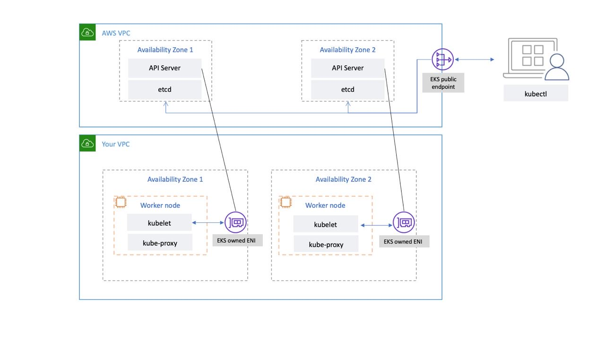

EKS 컨트롤 플레인¶
Amazon Elastic Kubernetes Service(EKS)는 자체 쿠버네티스 컨트롤 플레인 또는 워커 노드를 설치, 운영 및 유지 관리할 필요 없이 AWS에서 쉽게 쿠버네티스를 실행할 수 있게 해주는 관리형 쿠버네티스 서비스입니다. 업스트림 쿠버네티스를 실행하며 쿠버네티스 규정 준수 인증을 받았습니다. 이러한 규정 준수를 통해 EKS는 EC2 또는 온프레미스에 설치할 수 있는 오픈 소스 커뮤니티 버전과 마찬가지로 쿠버네티스 API를 지원합니다. 업스트림 쿠버네티스에서 실행되는 기존 애플리케이션은 Amazon EKS와 호환됩니다.
EKS는 쿠버네티스 컨트롤 플레인 노드의 가용성과 확장성을 자동으로 관리하고 비정상 컨트롤 플레인 노드를 자동으로 대체합니다.
EKS 아키텍처¶
EKS 아키텍처는 쿠버네티스 컨트롤 플레인의 가용성과 내구성을 손상시킬 수 있는 단일 장애 지점을 제거하도록 설계되었습니다.
EKS로 관리되는 쿠버네티스 컨트롤 플레인은 EKS 관리형 VPC 내에서 실행됩니다. EKS 컨트롤 플레인은 쿠버네티스 API 서버 노드, 기타 클러스터로 구성됩니다. API 서버, 스케줄러, kube-controller-manager와 같은 구성 요소를 실행하는 쿠버네티스 API 서버 노드는 오토 스케일링 그룹에서 실행됩니다. EKS는 AWS 리전 내의 별개의 가용 영역(AZ)에서 최소 2개의 API 서버 노드를 실행합니다. 마찬가지로 내구성을 위해 etcd 서버 노드도 3개의 AZ에 걸친 자동 크기 조정 그룹에서 실행됩니다. EKS는 각 AZ에서 NAT 게이트웨이를 실행하고, API 서버 및 etcd 서버는 프라이빗 서브넷에서 실행됩니다. 이 아키텍처는 단일 AZ의 이벤트가 EKS 클러스터의 가용성에 영향을 미치지 않도록 합니다.
새 클러스터를 생성하면 Amazon EKS는 클러스터와 통신하는 데 사용하는 관리형 쿠버네티스 API 서버를 위한 고가용성 엔드포인트를 생성합니다(kubectl과 같은 도구 사용). 관리형 엔드포인트는 NLB를 사용하여 쿠버네티스 API 서버의 부하를 분산합니다. 또한 EKS는 워커 노드와의 원활한 통신을 위해 서로 다른 AZ에 두 개의 ENI를 프로비저닝합니다.

쿠버네티스 클러스터의 API 서버는 퍼블릭 인터넷(퍼블릭 엔드포인트 사용) 또는 VPC(EKS 관리 ENI 사용) 또는 둘 다를 통해 연결할 수 있습니다.
사용자와 워커 노드가 퍼블릭 엔드포인트를 사용하여 API 서버에 연결하든 EKS에서 관리하는 ENI를 사용하든 관계없이 연결을 위한 중복 경로가 있습니다.
권장 사항¶
컨트롤 플레인 메트릭 모니터링¶
쿠버네티스 API 메트릭을 모니터링하면 컨트롤 플레인 성능에 대한 통찰력을 얻고 문제를 식별할 수 있습니다. 비정상 컨트롤 플레인은 클러스터 내에서 실행되는 워크로드의 가용성을 손상시킬 수 있습니다. 예를 들어 잘못 작성된 컨트롤러는 API 서버에 과부하를 일으켜 애플리케이션의 가용성에 영향을 미칠 수 있습니다.
쿠버네티스는 /metrics 엔드포인트에서 컨트롤 플레인 메트릭을 노출합니다.
kubectl을 사용하여 노출된 메트릭을 볼 수 있습니다.
이러한 지표는 프로메테우스 텍스트 형식으로 표시됩니다.
프로메테우스를 사용하여 이러한 지표를 수집하고 저장할 수 있습니다. 2020년 5월, CloudWatch는 CloudWatch Container Insights에 프로메테우스 지표 모니터링에 대한 지원을 추가했습니다. 따라서 Amazon CloudWatch를 사용하여 EKS 컨트롤 플레인을 모니터링할 수도 있습니다. 새 Prometheus 스크랩 대상 추가 자습서: 프로메테우스 KPI 서버 지표를 사용하여 지표를 수집하고 CloudWatch 대시보드를 생성하여 클러스터의 컨트롤 플레인을 모니터링할 수 있습니다.
쿠버네티스 API 서버 메트릭은 여기에서 찾을 수 있습니다. 예를 들어, apiserver_request_duration_seconds는 API 요청을 실행하는 데 걸리는 시간을 나타낼 수 있습니다.
다음과 같은 컨트롤 플레인 메트릭을 모니터링해 보십시오.
API 서버¶
| 메트릭 | 설명 |
|---|---|
apiserver_request_total |
각 메소드, 드라이 런 값, 그룹, 버전, 리소스, 범위, 구성 요소, HTTP 응답 코드에 대해 구분된 API 서버 요청 카운터입니다. |
apiserver_request_duration_seconds* |
각 메소드, 드라이 런 값, 그룹, 버전, 리소스, 하위 리소스, 범위, 구성 요소에 대한 응답 지연 시간 분포(초 단위) |
apiserver_admission_controller_admission_duration_seconds |
admission controller 지연 시간 히스토그램(초), 이름으로 식별되며 각 작업, API 리소스 및 유형별로 구분됨(검증 또는 승인). |
apiserver_admission_webhook_rejection_count |
admission webhook 거부 건수.이름, 작업, 거부 코드, 유형(검증 또는 승인), 오류 유형(calling_webhook_error, apiserver_internal_error, no_error) 으로 식별됩니다. |
rest_client_request_duration_seconds |
요청 지연 시간(초)동사와 URL별로 분류되어 있습니다. |
rest_client_requests_total |
상태 코드, 메서드, 호스트별로 파티션을 나눈 HTTP 요청 수 |
etcd¶
| 메트릭 | 설명 |
|---|---|
etcd_request_duration_seconds |
각 작업 및 객체 유형에 대한 Etcd 요청 지연 시간(초) |
etcd_db_total_size_in_bytes 또는 apiserver_storage_db_total_size_in_bytes (EKS v1.26부터 시작) |
Etcd 데이터베이스 크기 |
쿠버네티스 모니터링 개요 대시보드를 사용하여 쿠버네티스 API 서버 요청과 지연 시간 및 etcd 지연 시간 메트릭을 시각화하고 모니터링하는 것을 고려해 보십시오.
다음 프로메테우스 쿼리를 사용하여 etcd의 현재 크기를 모니터링할 수 있습니다. 이 쿼리는 API 메트릭 엔드포인트에서 메트릭을 스크랩하는 kube-apiserver라는 작업이 있고 EKS 버전이 v1.26 미만인 것으로 가정합니다.
클러스터 인증¶
EKS는 현재 bearer/서비스 계정 토큰과 웹훅 토큰 인증을 사용하는 IAM 인증 등 두 가지 유형의 인증을 지원합니다. 사용자가 쿠버네티스 API를 호출하면 웹훅는 요청에 포함된 인증 토큰을 IAM에 전달합니다. base 64로 서명된 URL인 토큰은 AWS 명령줄 인터페이스(AWS CLI)에 의해 생성됩니다.
EKS 클러스터를 생성하는 IAM 사용자 또는 역할은 자동으로 클러스터에 대한 전체 액세스 권한을 얻습니다. aws-auth configmap을 편집하여 EKS 클러스터에 대한 액세스를 관리할 수 있습니다.
aws-auth 컨피그맵을 잘못 구성하여 클러스터에 대한 액세스 권한을 잃은 경우에도 클러스터 생성자의 사용자 또는 역할을 사용하여 EKS 클러스터에 액세스할 수 있습니다.
드문 경우이긴 하지만 AWS 리전에서 IAM 서비스를 사용할 수 없는 경우에도 쿠버네티스 서비스 계정의 bearer 토큰을 사용하여 클러스터를 관리할 수 있습니다.
클러스터에서 모든 작업을 수행할 수 있는 “super-admin” 계정을 생성하십시오.
super-admin cluster-admin 역할을 부여하는 역할 바인딩을 생성합니다.
kubectl create clusterrolebinding super-admin-rb --clusterrole=cluster-admin --serviceaccount=kube-system:super-admin
서비스 계정 시크릿 가져오기:
secret_name=`kubectl -n kube-system get serviceaccount/super-admin -o jsonpath=' {.secrets [0] .name} '`
시크릿과 관련된 토큰 가져오기:
SECRET_NAME=`kubectl -n kube-system get serviceaccount/super-admin -o jsonpath='{.secrets[0].name}'`
서비스 계정과 토큰을 `kubeconfig'에 추가합니다.
super-admin 계정을 사용하도록 kubeconfig에서 현재 컨텍스트를 설정합니다.
최종 kubeconfig는 다음과 같아야 합니다.
apiVersion: v1
clusters:
- cluster:
certificate-authority-data:<REDACTED>
server: https://<CLUSTER>.gr7.us-west-2.eks.amazonaws.com
name: arn:aws:eks:us-west-2:<account number>:cluster/<cluster name>
contexts:
- context:
cluster: arn:aws:eks:us-west-2:<account number>:cluster/<cluster name>
user: super-admin
name: arn:aws:eks:us-west-2:<account number>:cluster/<cluster name>
current-context: arn:aws:eks:us-west-2:<account number>:cluster/<cluster name>
kind: Config
preferences: {}
users:
#- name: arn:aws:eks:us-west-2:<account number>:cluster/<cluster name>
# user:
# exec:
# apiVersion: client.authentication.k8s.io/v1alpha1
# args:
# - --region
# - us-west-2
# - eks
# - get-token
# - --cluster-name
# - <<cluster name>>
# command: aws
# env: null
- name: super-admin
user:
token: <<super-admin sa's secret>>
Admission Webhooks¶
쿠버네티스에는 admission webhooks 검증 및 변경이라는 두 가지 유형의 admission webhooks이 있습니다. 이를 통해 사용자는 쿠버네티스 API를 확장하고 API에서 객체를 승인하기 전에 객체를 검증하거나 변경할 수 있습니다. 이러한 웹훅를 잘못 구성하면 클러스터의 중요한 작업이 차단되어 EKS 컨트롤 플레인이 불안정해질 수 있습니다.
클러스터 크리티컬 작업에 영향을 주지 않으려면 다음과 같은 “catch-all” 웹훅을 설정하지 마십시오.
- name: "pod-policy.example.com"
rules:
- apiGroups: ["*"]
apiVersions: ["*"]
operations: ["*"]
resources: ["*"]
scope: "*"
또는 웹훅에 30초 미만의 제한 시간을 가진 Fail Open 정책이 있는지 확인하여 웹훅를 사용할 수 없는 경우 클러스터의 중요한 워크로드에 영향을 주지 않도록 하십시오.
안전하지 않은 sysctls가 있는 파드를 차단한다.¶
Sysctl은 사용자가 런타임 중에 커널 파라미터를 수정할 수 있는 리눅스 유틸리티입니다. 이러한 커널 매개변수는 네트워크, 파일 시스템, 가상 메모리, 프로세스 관리 등 운영 체제 동작의 다양한 측면을 제어합니다.
쿠버네티스를 사용하면 파드에 sysctl 프로필을 할당할 수 있다.쿠버네티스는 systcls를 안전한 것과 안전하지 않은 것으로 분류합니다. 안전한 sysctls는 컨테이너 또는 파드에 네임스페이스가 지정되며, 이를 설정해도 노드의 다른 파드나 노드 자체에는 영향을 주지 않습니다. 반대로 안전하지 않은 sysctl은 다른 파드를 방해하거나 노드를 불안정하게 만들 수 있으므로 기본적으로 비활성화되어 있습니다.
안전하지 않은 sysctls가 기본적으로 비활성화되므로, kubelet은 안전하지 않은 sysctl 프로필을 가진 파드를 생성하지 않습니다. 이러한 파드를 생성하면, 스케줄러는 해당 파드를 노드에 반복적으로 할당하지만 노드는 실행에 실패합니다. 이 무한 루프는 궁극적으로 클러스터 컨트롤 플레인에 부담을 주어 클러스터를 불안정하게 만듭니다.
안전하지 않은 sysctls가 있는 파드를 거부하려면 OPA 게이트키퍼 또는 Kyverno를 사용하는 것을 고려해 보십시오.
클러스터 업그레이드 처리¶
2021년 4월부터 쿠버네티스 릴리스 주기가 연간 4개 릴리스(분기에 한 번)에서 연간 세 번의 릴리스로 변경되었습니다. 새 마이너 버전(예: 1.21 또는 1.22) 은 대략 15주마다 릴리스됩니다. 쿠버네티스 1.19부터 각 마이너 버전은 처음 릴리스된 후 약 12개월 동안 지원됩니다. 쿠버네티스는 최소 두 개의 마이너 버전에 대해 컨트롤 플레인과 워커 노드 간의 호환성을 지원합니다.
쿠버네티스 커뮤니티의 쿠버네티스 버전 지원에 따라 EKS는 언제든지 최소 3개의 프로덕션 버전의 쿠버네티스 제공하며, 네 번째 버전은 지원 중단될 예정입니다.
EKS는 지원 종료일 최소 60일 전에 해당 쿠버네티스 마이너 버전의 지원 중단을 발표합니다. 지원 종료일이 되면 지원 중단된 버전을 실행하는 클러스터는 EKS가 지원하는 다음 쿠버네티스 버전으로 자동 업데이트되기 시작합니다.
EKS는 쿠버네티스와 EKS 플랫폼 버전 모두에 대해 in-place 클러스터 업그레이드를 수행합니다. 이를 통해 클러스터 운영이 단순화되고 다운타임 없이 최신 쿠버네티스 기능을 활용하고 보안 패치를 적용할 수 있습니다.
새 쿠버네티스 버전에는 중요한 변경 사항이 적용되며 업그레이드 후에는 클러스터를 다운그레이드할 수 없습니다. 최신 쿠버네티스 버전으로 원활하게 전환하려면 클러스터 업그레이드 처리를 위한 프로세스를 잘 문서화해야 합니다. 최신 쿠버네티스 버전으로 업그레이드할 때 in-place 클러스터 업그레이드를 수행하는 대신 새 클러스터로 마이그레이션하는 것을 고려할 수 있습니다. VMware의 Velero와 같은 클러스터 백업 및 복원 도구를 사용하면 새 클러스터로 마이그레이션하는데 도움이 될 수 있습니다.
- 새 버전에서는 기존 애플리케이션을 손상시킬 수 있는 API와 기능을 더 이상 사용하지 못할 수 있으므로 쿠버네티스 지원 중단 정책을 숙지해야 합니다.
- 클러스터를 업그레이드하기 전에 쿠버네티스 변경 로그 및 Amazon EKS 쿠버네티스 버전을 검토하여 워크로드에 미치는 부정적인 영향을 파악해야 합니다.
- 비프로덕션 환경에서 클러스터 업그레이드를 테스트하고 현재 워크로드 및 컨트롤러에 미치는 영향을 파악해 보십시오. 새 쿠버네티스 버전으로 이동하기 전에 애플리케이션, 컨트롤러 및 사용자 지정 통합의 호환성을 테스트하는 지속적 통합 워크플로를 구축하여 테스트를 자동화할 수 있습니다.
- 클러스터를 업그레이드한 후 쿠버네티스 애드온을 업그레이드해야 할 수도 있습니다. Amazon EKS 클러스터 쿠버네티스 버전 업데이트를 검토하여 클러스터 애드온과 클러스터 버전의 호환성을 검증하십시오.
- 컨트롤 플레인 로깅을 켜고 로그에서 오류가 있는지 검토해 보십시오.
- EKS 클러스터를 관리할 때는
eksctl을 사용하는 것을 고려해 보십시오.eksctl을 사용하여 컨트롤 플레인, 애드온, 워커 노드 업데이트할 수 있습니다. - EKS 컨트롤 플레인 업그레이드에는 워커 노드 업그레이드가 포함되지 않습니다. EKS 워커 노드 업데이트는 사용자의 책임입니다. 워커 노드 업그레이드 프로세스를 자동화하려면 EKS 관리 노드 그룹 또는 EKS on Fargate를 사용하는 것을 고려해 보십시오.
- 필요한 경우
kubectl convert플러그인을 사용하여 쿠버네티스 매니페스트 파일을 다른 API 버전 간에 변환할 수 있습니다
대규모 클러스터 실행¶
EKS는 컨트롤 플레인 인스턴스의 부하를 능동적으로 모니터링하고 자동으로 확장하여 고성능을 보장합니다. 하지만 대규모 클러스터를 실행할 때는 쿠버네티스 및 AWS 서비스의 할당량 내에서 발생할 수 있는 성능 문제와 한계를 고려해야 합니다.
- ProjectCalico 팀에서 수행한 테스트에 따르면, 서비스가 1000개 이상인 클러스터에서
iptables모드에서kube-proxy를 사용할 경우 네트워크 지연이 발생할 수 있습니다. 해결 방법은ipvs모드에서kube-proxy로 실행으로 전환하는 것입니다. - CNI에서 파드의 IP 주소를 요청해야 하거나 새 EC2 인스턴스를 자주 생성해야 하는 경우에도 EC2 API 요청 제한이 발생할 수 있습니다. IP 주소를 캐싱하도록 CNI를 구성하면 EC2 API 호출을 줄일 수 있습니다. 더 큰 EC2 인스턴스 유형을 사용하여 EC2 조정 이벤트를 줄일 수 있습니다.
한도 및 서비스 할당량 알아보기¶
AWS는 실수로 리소스를 과도하게 프로비저닝하는 것을 방지하기 위해 서비스 한도(팀이 요청할 수 있는 각 리소스 수의 상한선)를 설정합니다. Amazon EKS 서비스 할당량에는 서비스 한도가 나와 있습니다. AWS 서비스 할당량을 사용하여 변경할 수 있는 두 가지 유형의 한도, Soft limit가 있습니다. Hard limit는 변경할 수 없습니다. 애플리케이션을 설계할 때는 이러한 값을 고려해야 합니다. 이러한 서비스 제한을 정기적으로 검토하여 애플리케이션 설계 중에 통합하는 것이 좋습니다.
- 오케스트레이션 엔진의 제한 외에도 ELB(Elastic Load Balancing) 및 Amazon VPC와 같은 다른 AWS 서비스에는 애플리케이션 성능에 영향을 미칠 수 있는 제한이 있습니다.
- EC2 한도에 대한 자세한 내용은 EC2 서비스 제한을 참조하십시오.
- 각 EC2 인스턴스는 Amazon 제공 DNS 서버로 전송할 수 있는 패킷 수를 네트워크 인터페이스당 초당 최대 1024 패킷으로 제한합니다.
- EKS 환경에서 etcd 스토리지 한도는 업스트림 지침에 따라 8GB입니다. etcd db 크기를 추적하려면
etcd_db_total_size_in_bytes지표를 모니터링하십시오. 이 모니터링을 설정하려면 경고 규칙etcdBackendQuotaLowSpace및etcdExcessiveDatabaseGrowth를 참조할 수 있습니다.